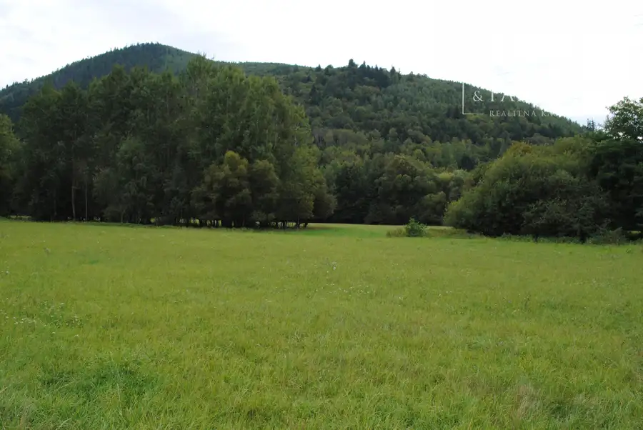
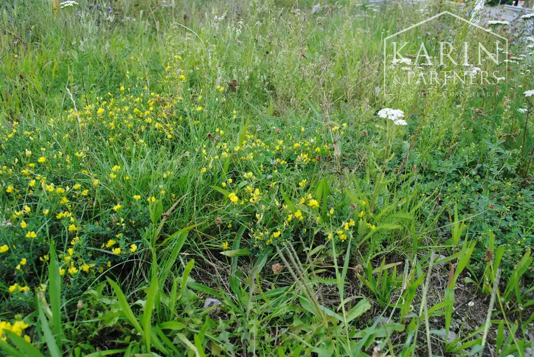
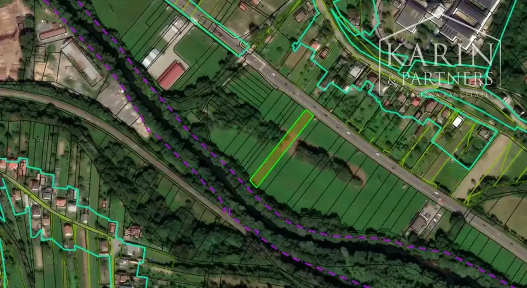

Veľký rovinatý pozemok v Podbrezovej v časti Lopej
Podbrezová



- Plocha1973 m²
- VlastníctvoOsobné
O nehnuteľnosti
S radosťou vám všetkým ponúkame, veľký pozemok, ktorý sa rozprestiera v Podbrezovej v časti Lopej. Na liste vlastníctva je evidovaný ako trvalý trávny porast. Celý pozemok je rovinatý a rastú na ňom rôzne trávy, kvety, bylinky. Ak ste rozmýšľali nad vlastnou rozkvitnutou lúkou kde by ste si vysadili svoje bylinky alebo sa venovali včelám tak ste našli krásny pozemok.Táto zaujímavá ponuka sa nachádza v samostatnej časti na Horehroní, v okrese Brezno. V roku 1960 bola pričlenená k Podbrezovej, odvtedy je jednou z jej miestnych častí. História: Prvá zachovaná písomná zmienka o Lopeji pochádza z roku 1406, je však známe, že ho založil už v roku 1358 richtár Petrík z Predajnej. Obec patrila Ľupčianskemu hradnému panstvu. Známa bola tým, že jej obyvatelia pracovali v lesoch, pracovala tu píla a ťažila sa ruda.Vzdialenosť: Cesta autom trvá od Banskej Bystrice 35 minút a 15 minút od BreznaZloženie parciel: 1973 m2 - trvalý trávny porast v extraviláne obce umiestnený medzi hlavnou cestou a riekou HronRozmery pozemku: približne 15m x 133m , jedna strana je dlhšiaPrístupová asfaltová cesta , autobusová zastávka časť TurčanV prípade ďalších otázok sa ma neváhajte opýtať. Majiteľ to chce predať čo najskôr, takže aj dohoda na cene možná.Viac o mojej práci si prečítajte: Ing. Viera Igriniová | KARIN&PARTNERSVyjadrenie z obecného úradu v Podbrezovej sa vyjadrilo takto: ,,Pozemok je situovaný v extraviláne obce Podbrezová. V ÚPN obce Podbrezová sú z hľadiska funkčného využitia vedené Trvalý trávny porast, lúky pasienky a na predmetných parcelách v súčasnosti nie je prípustná výstavba stavieb. Toto stanovisko nenahrádza konanie stavebného úradu ani cestného správneho orgánu.,, V tejto chvíli by som odporučila využiť krásnu rovinatú lúku pre lúčne kvety a bylinky pre zber alebo včelárstvo. V blízkosti pozemku je les.Cena: 20 Eur / 1 m2V cene je zahrnutý kompletný právny servis, rezervačné aj kúpnopredajné zmluvy, poplatky spojené s predajom, profesionálne vybavenie.Teším sa na obhliadku s vami Ing. Viera Igriniovárealitná maklérka Karin Partners0908 167 574, igriniova@karinpartners.sk
Parametre
- Druh
- Lúka, pasienok
- Dátum zverejnenia
- 17. 09. 2025
- Plocha pozemku
- 1973 m²
- Terén pozemku
- Rovinatý
- Typ
- Predaj
- Vlastníctvo
- Osobné
- Územie
- Extravilán